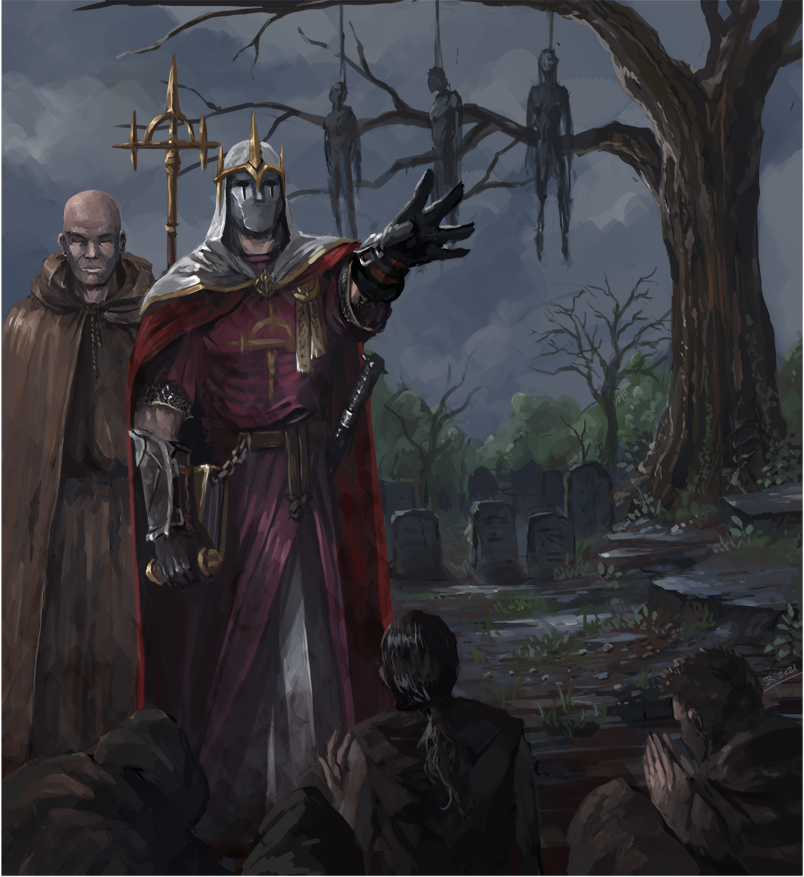

Lawful Evil characters are bound to the nature of power. The strong dominates the weak, and the truly strong need not break their own ruleset to achieve such power. Tradition and loyalty are of great value to the Lawful Evil character, yet they do not understand mercy or kindness for they view it as a weakness. Lawful Evil characters understand that rulesets aid in keeping the structure of their might intact, but aren't beyond massacering what is necessary and will easily take pleasure in the pain of others to either gain more power or show their dominance.
Chaotic Good characters are individualistic beings above all. They view the idea of having rules wrong as their beliefs often tell them that not everything is cut and dry. These characters often will carry out what they believe is for the greater good, even should it bypass the laws in place and may be of benefit only in the moment of things. Though the hearts of chaotic good characters are kind and loving, they do not always agree with the larger picture or with the set rules if it harms or is unfair to another of their kind. Nonetheless, they would stand side by side with even Lawful Good characters against those of evil intent.
Chaotic Evil characters do whatever is upon their mind, as long as it brings them pleasure or satisfaction regardless of any who are in the way of their current scheme. Unpredictable, Chaotic Evil characters are prone to simply be evil for the sake of being evil, without the need or reward of power or riches. These characters adore breaking rules and causing mayhem wherever they go and will do so at every turn, even turning on those who were allies mere moments ago. As such, these characters' schemes often do not last long as they so easily turn upon themselves.
True Good characters are often viewed as naive, for they are characters that will always seek the good in every encounter. These characters will go out of their way to aid everyone and everything on both sides of an argument, attempting even to bring those of darkest hearts to light. Characters of True Good following will often lend a hand to anyone if simply asked or if they see that something is wrong, even often bringing pain upon themselves if it means helping another. They are easily tricked by evil characters, but sometimes their absolute kindness and gentleness softens and redeems those of dark intent or turns the most hardened lawful character into one willing to stand with an enemy to face a greater threat.
True Evil characters are exactly as their given title describes them. They seek pure destruction in all of its forms and have few other impulses or goals that drive their actions. Their purpose is single-minded, and that is to bring their own flaming vision of the world with no regard to anything or anyone else. Such characters are very far and few between, and while many would think that these characters are foolishly straight-forward, only their goal is as such and many True Evil characters can be very manipulative in furthering their cause against life itself.
True Lawful characters are beings bound to the laws given to them. They follow this rulest methodically and will never sway from it, no matter the situation. As such, a True Lawful character is hard to associate with since they will not forgive even a single deviation from their code and will harsly deal out justice to any who would defy or cross the will of the code or being they serve.
True Chaotic characters have abandonned reason, no longer abiding to laws or rules of any sort except their own. They are much like True Evil characters in which they would erase all things living, yet would not replace it with their own vision as they have none. Characters that are of this alignment are usually corrupted or taken over by a spell of madness. The few characters who are True Chaotic by nature tend to be followers of deities of insanity and pandemonium, heading cults whose goal is to simply erase exsistance itself.
In order to protect humanity, the Eonnan clergy are swift and harsh in their punishment of those they suspect as evil.